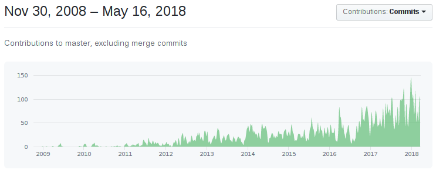

На диске — столбцы.
Данные хранятся по столбцам.
В оперативке — столбцы.
Данные обрабатываются по столбцам.
В виде кусочков столбцов — например, 65 536 элементов.
Размер кусочка — зависит от многих вещей.
При SELECT — см. настройку max_block_size.
Представлены в виде объектов с интерфейсом IColumn.
Варианты — ColumnVector<T>, ColumnString, ColumnArray...
ColumnVector<T> — почти как std::vector<T>.
Но под интерфейсом IColumn.
И вместо std::vector<T> — PODArray<T> (зачем?).
Раньше был std::vector. PODArray — просто оптимизация.
PODArray:
— нет лишнего memset;
— есть padding 15 байт на конце;
— использует интерфейс аллокатора, отличный от std::allocator, который позволяет иногда делать mremap.
ColumnString — из двух компонент:
1. Байты, уложенные подряд.
2. Смещения до i+1 строки.
h e l l o \0 w o r l d \0
6 12
ColumnConst
Из одного вложенного столбца,
содержащего одно значение.
Базовые операции:
— cut — вырезать часть столбца, для реализации LIMIT;
— filter — для реализации WHERE;
— compareAt, permute — для реализации ORDER BY;
...
Владение — с помощью COWPtr<IColumn>.
Раньше был std::shared_ptr<IColumn>.
virtual Ptr filter(const Filter & filt, ssize_t result_size_hint) const = 0;
Вместо модификации содержимого, создают
и возвращают новый объект-столбец.
Это нормально, так как операции "крупные".
Но есть также "мелкие", мутирующие операции.
— хранение данных в оперативке;
— общие операции над столбцами.
— Apache Arrow;
— массивы в NumPy;
— массивы APL, J, K.
Изолировать максимально эффективные
внутренние циклы от кода-обвязки.
Код не обязан быть эффективным целиком.
Оптимизируемые места должны быть локализуемы.
«векторный движок»
Бонус:
— SIMD инструкции;
— хитрые оптимизации для однородных данных
(IColumn::filter, реализация функции LIKE);
IDataType
— бинарная сериализация и десериализация в потоки данных;
— один столбец может быть записан в несколько физических потоков, пример: Array(Array(UInt8));
— сериализация и десериализация в текстовом виде для разных форматов данных;
— свойства типа данных;
— полностью immutable: std::shared_ptr<const IDataType>.
DataTypeUInt32 \ / ColumnUInt32
X
DataTypeDateTime / \ ColumnConst(ColumnUInt32)
Кусочек таблицы: набор из { ColumnPtr, DataTypePtr, name }
Обработка данных в конвейере выполнения запроса
выполняется над блоками.
... здесь есть архитектурная ошибка, которую придётся исправить.
Разделить на
Header: набор из { ColumnPtr, DataTypePtr, name }
Block: { size_t num_rows, std::vector
IBlockInputStream: Block read();
IBlockOutputStream: void write(Block);
Реализуют:
— форматы данных (CSV, JSON, Native...)
— чтение и запись в таблицы;
— преобразования над данными (Limit, Filter, Expression, ...)
Строго типизированы — блоки имеют одни типы данных
и значения констант.
/** Get data structure of the stream... */
virtual Block getHeader() const = 0;
(Совсем недавно этого метода не было.
Вопрос — что он позволил сделать?)
Интерфейс — IStorage.
Имплементации — StorageMemory, StorageMergeTree...
Экземпляры класса — это таблицы.
virtual BlockInputStreams read(
const Names & /*column_names*/,
const SelectQueryInfo & /*query_info*/,
const Context & /*context*/,
QueryProcessingStage::Enum & /*processed_stage*/,
size_t /*max_block_size*/,
unsigned /*num_streams*/)
Почему BlockInputStreams?
Это всего лишь BlockInputStream (для SELECT)
или BlockOutputStream (для INSERT),
который выполняет все нужные преобразования
при вызове метода read или write.
Вопрос — а какой конвейер для INSERT SELECT?
SELECT работает по принципу pull, INSERT по принципу push.
На самом деле это — архитектурная ошибка.
— control flow не контролируется извне;
— нет возможности склеить выполнение нескольких запросов;
— более сложная реализация отмены выполнения запроса, приоритетов и кооперативного выполнения;
— трудно прицеплять операции сбоку конвейера — выполнение скалярных подзапросов, window функции, и т. п.
— нет прозрачного доступа к алгебраическим свойствам элементов конвейера.
— трудно выполнять преобразования над конвейером;
— план выполнения запросов не доступен в декларативном виде;
— для распределённых запросов виден только фрагмент плана выполнения.
Парсер — recursive descent parser вручную.
Готовые парсеры SQL:
— парсер из PostgreSQL (есть библиотека);
— парсер из sqlite;
— готовые варианты для ANTLR;
— Apache Calcite;
Особенности парсера ClickHouse:
— Nested столбцы;
— лямбда-функции;
— алиасы и выражения в любом месте запроса;
InterpreterSelectQuery
ExpressionAnalyzer
Большинство — rule based оптимизации:
— свёртка констант;
— склейка одинаковых выражений;
— удаление ненужных вычислений;
— удаление ненужных столбцов;
...
— протаскивание ARRAY JOIN ближе к концу;
— превращение цепочек OR в IN;
Надо всё переписать :)
Выделить отдельные оптимизации по своим местам.
Сделать оптимизации запросов легко pluggable.
Выделить общие интерфейсы для некоторых видов оптимизаций.
(пример — peephole оптимизации)
Работают сразу над целым блоком.
В коде реализуется не одно применение функции,
а целый цикл над массивами.
Внутренний цикл (обычно) свой
для каждой комбинации типов аргументов.
Внутри цикла (обычно) нет виртуальных вызовов,
проверок типов, лишних бранчей.
Пример: для оператора сложения есть
UInt8 UInt16 UInt32 UInt64 UInt8 UInt16 UInt32 UInt64
Int8 Int16 Int32 Int64 ✕ Int8 Int16 Int32 Int64
Float32 Float64 Float32 Float64
комбинаций.
А ещё один из аргументов может быть константным:
10 * 10 * 3 = 300 реализаций.
Достоинства:
— максимальная специализация;
— (почти) максимально возможная эффективность;
— достаточно изолированный код.
Недостатки:
— неудобный интерфейс для реализации;
— громоздкий код (шаблоны C++);
— сильное увеличение размера бинарника;
— нет возможности оптимизировать fused операции, пример: x * y + z;
1. Векторный движок.
Примеры:
APL, A+, J (jd), K (kdb+, q)
Vectorwise (Actian Vector, VectorH), начальная поддержка в Hive
2. Компиляция выражений в runtime.
Примеры:
Impala, MemSQL, DBToaster
1. Векторный движок.
2. Компиляция выражений в runtime.
Лучше всего — и то, и другое!
— SIMD;
— Instruction Level Parallelism;
— Out Of Order Execution;
IAggregateFunction
create — инициализировать состояние
в заранее подготовленном куске памяти;
update — обновить состояние по значению аргументов;
merge — склеить два состояния в одно;
serialize, deserialize
— записать в поток ввода-вывода (сеть, файл, таблицу)
insertResultInto — получить конечное значение.
Состояние агрегатной функции - first class citizen в ClickHouse!
— обычную функцию;
https://github.com/ClickHouse/ClickHouse/pull/1535
gcd, lcm — Maks Skorokhod
— агрегатную функцию;
https://github.com/ClickHouse/ClickHouse/pull/2352
windowFunnel — Sundy Li
— табличную функцию;
https://github.com/ClickHouse/ClickHouse/pull/2164/
file — decaseal (Топвизор)
— формат данных;
https://github.com/ClickHouse/ClickHouse/pull/1387
Cap'n'Proto — Marek Vavruša
— движок таблиц;
https://github.com/ClickHouse/ClickHouse/pull/1331
Kafka — Marek Vavruša
— движок баз данных;
https://github.com/ClickHouse/ClickHouse/pull/914
Dictionary — Nicolai Kochetov
— источник внешних словарей;
https://github.com/ClickHouse/ClickHouse/pull/204
http, executable — Oleg Alexeenkov
— layout внешнего словаря;
https://github.com/ClickHouse/ClickHouse/pull/785
iptrie — Marek Vavruša
— синтаксическую конструкцию;
https://github.com/ClickHouse/ClickHouse/pull/2134
скобки для элементов UNION ALL — zhang2014
— секцию запроса;
https://github.com/ClickHouse/ClickHouse/pull/293
LIMIT BY — Artemkin Pavel
— тип запросов;
https://github.com/ClickHouse/ClickHouse/pull/1163
SYSTEM — Vitaliy Lyudvichenko
— тип данных;
https://github.com/ClickHouse/ClickHouse/pull/945
UUID — Guillaume Tassery
— алгоритм сжатия;
https://github.com/ClickHouse/ClickHouse/pull/1045
none — Paweł Róg
— протокол работы сервера;

Web site: https://clickhouse.com/
Google groups: https://groups.google.com/forum/#!forum/clickhouse
Maillist: clickhouse-feedback@yandex-team.com
Telegram chat: https://telegram.me/clickhouse_ru (более 1500 участников) и https://telegram.me/clickhouse_en
GitHub: https://github.com/ClickHouse/ClickHouse/
Twitter: https://twitter.com/ClickHouseDB
+ митапы. Москва, Санкт-Петербург, Новосибирск, Екатеринбург, Минск, Нижний Новгород, Берлин, Palo Alto, Пекин, Sunnyvale, San Francisco...